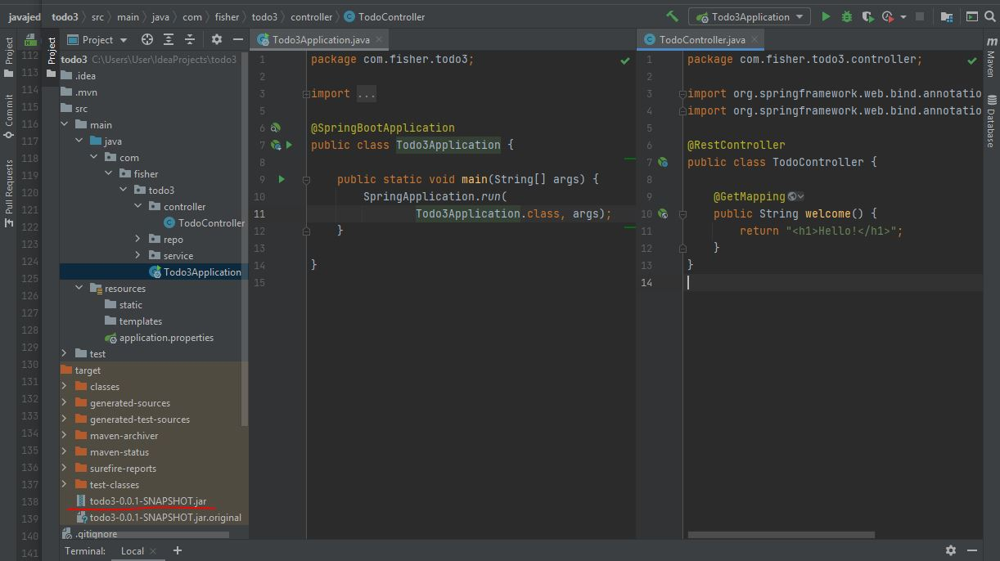
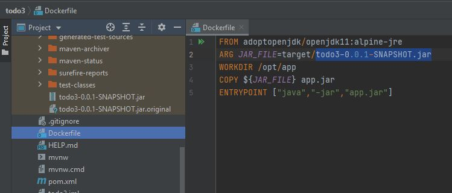
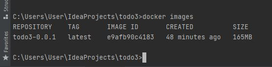

Что такое Docker
Docker - инструмент, предназначенный для быстрой доставки и развёртывания приложений. Он позволяет упаковать приложение вместе со всеми его зависимостями в так называемый контейнер, а затем запустить его в любой среде.
Идея контейнеризации состоит в том, что на одной машине может разворачиваться множество таких контейнеров с приложениями. Для каждого из них в операционной системе выделяется изолированная область — осуществляется виртуализация на уровне ОС.
Преимущества контейнеров:
- приложения получают единый механизм сборки
- не нужно конфигурировать среду для запуска — она поставляется вместе с приложением
- приложения легче масштабировать
- есть система оркестрации контейнеров, позволяющая ими управлять
Основные понятия
Образ — некий шаблон, на основе которого создаются контейнеры. Содержит всё необходимое для запуска приложения. Сюда относятся код, системные утилиты, библиотеки, настройки и так далее. Образ можно представить в виде набора слоёв, которые накладываются друг на друга. Каждый последующий добавляет, изменяет или удаляет файлы предыдущего слоя.
DockerfIle — текстовый файл с набором инструкций по созданию образа, каждая из которых добавляет к образу новый слой.
Контейнер — конкретный экземпляр приложения, созданный на основе образа. Причём из одного образа можно создать сколько угодно контейнеров. Технически контейнер создаётся путём добавления к образу нового слоя, содержащего результаты работы приложения.
Реестр — хранилище образов (как GitHub для кода приложений). Образы можно скачивать из реестра и создавать на их основе контейнеры. Также в реестр можно загружать новые или изменённые образы для дальнейшего использования.
Пример использования
- Скачиваем и устанавливаем Docker. (Часто нужно включить в BIOS аппаратную виртуализацию.)
- Создаём java-проект, например Spring Boot Web приложение. Проверяем что оно у нас успешно запускается на http://localhost:8080/
- Собираем проект в .jar-архив командой
mvn package

- Создаём файл с именем Dockerfile в корне проекта, который содержит инструкции для сборки образа со следующим текстом: 
- После этого в терминале вводим команду, с помощью которой собираем образ и запускаем контейнер.
- Проверяем, что образ создан с помоью команды
docker imagesВывод должен быть таким:

- Далее на основании этого образа запускаем контейнер, командой
- Теперь проверяем работоспособность запущенного контейнера, перейдя в браузере
по http://localhost:8080 или введя в терминале
curl http://localhost:8080
| Команда | Описание |
FROM adoptopenjdk/openjdk11:alpine-jre |
Oбраз создаётся на основе alpine linux с установленной openjdk11 |
ARG JAR_FILE=target/todo3-0.0.1-SNAPSHOT.jar |
Переменной JAR_FILE присваивается путь к jar- архиву |
WORKDIR /opt/app |
Назначаем рабочую директорию, в которой будут выполняться дальнейшие команды (перемещаемся в папку app) |
COPY ${JAR_FILE} app.jar |
Наш jar-файл, указанный в JAR_FILE, копируется в папку app, и копии задаётся имя app.jar |
ENTRYPOINT ["java","-jar","app.jar"] |
jar-файл запускается, собирается команда java -jar app.jar из заданной рабочей директории |
docker build -t todo3-0.0.1 .
Точка в конце важна, она указывает на расположение Dockerfile (символ «точка» означает текущую директорию.
docker run -d -p 8080:8080 -t todo3-0.0.1
Опция -d означает старт процесса в фоновом режиме.
Опция -p тоже важна — дело в том, что контейнер собирается в полностью изолированном окружении.
Тот факт, что приложение внутри контейнера запущено на порту 8080, не означает,
что оно доступно вне контейнера на этом порту.
Требуется явно указать, что порту 8080 в контейнере (здесь второе значение — это порт, на котором работает наше приложение в контейнере) соответствует порт 8080 на локальной машине, который будет использоваться при обращении к контейнеру. Поэтому пишем через двоеточие -p 8080:8080.
Частые команды при работе с Docker
docker ps — выводит список запущенных контейнеров. Также ей можно передать параметр -a, чтобы вывести все контейнеры, а не только запущенные.
docker build — собирает образ Docker из Dockerfile и набора файлов, расположенных по определённому пути. Параметр -t используется, чтобы задать имя образа, последний параметр. — наименование каталога (в нашем случае текущий каталог).
docker images — выводит список образов в вашей системе.
docker logs — позволяет вывести на консоль логи указанного контейнера. Для этого необходимо указать имя или id контейнера. Можно использовать флаг --follow, чтобы следить за логами работающего контейнера: например, docker logs --follow c5ecc88de8f9.
docker run — запускает контейнер на основе указанного образа.
docker stop — останавливает контейнер. Можно передать опцию $(docker ps -a -q) для остановки всех запущенных контейнеров.
docker rm и docker rmi — команды, удаляющие контейнер и образ соответственно. Удалить все контейнеры: docker rm $(docker ps -a -q)